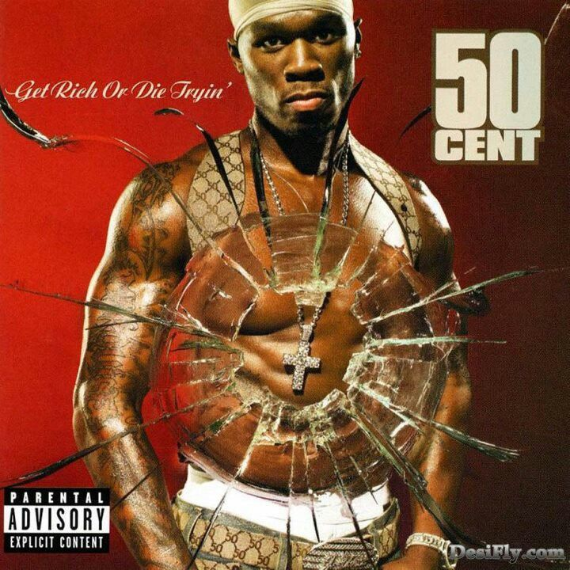

| Faixa | Música | Duração |
|---|---|---|
| 1 | Intro | 0:06 |
| 2 | Whats Up Gangsta? | 2:59 | 3 | Patiently Waiting | 4:48 | 4 | Many Men (Wish Death) | 4:16 | 5 | In da Club | 3:13 | 6 | High All the Time | 4:29 | 7 | Heat | 4:14 | 8 | If I Can't | 3:16 | 9 | Blood Hound | 4:00 | 10 | Back Down | 4:03 | 11 | P.I.M.P. | 4:09 | 12 | 21 Questions | 3:44 | 13 | Life's on the Line | 3:38 |
Get Rich or Die Tryin' é o terceiro álbum do rapper 50 Cent lançado em parceria com a gravadora Interscope. O seu lançamento estava previsto para 11 de fevereiro de 2003, mas acabou sendo lançado uma semana antes, em 4 de fevereiro. Foi produzido em parceria de Eminem e Dr Dre, contém canções como In da Club, 21 Questions, P.I.M.P. e If I Can't. O álbum vendeu 18 milhões de cópias. Este álbum está na lista dos 200 álbuns definitivos no Rock and Roll Hall of Fame
